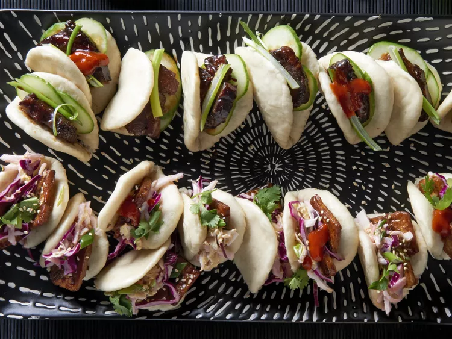

Steamed Buns Recipe

Description
For tender results, use a moderate-protein all-purpose flour, such as Gold Medal® or King Arthur®, when making these buns. This recipe uses both yeast and baking powder to ensure they rise in the steamer. Serve slightly warm or at room temperature, filled with your favorite fillings.
- 1 ½ teaspoons active dry yeast
- ¾ cup warm water (100 degrees F (38 degrees C))
- 3 tablespoons canola oil, divided
- 2 ½ cups all-purpose flour
- 2 tablespoons white sugar
- 2 teaspoons baking powder
- ½ teaspoon salt
Steps
- Stir together yeast and water in a small bowl; let stand 5 to 10 minutes. Whisk in 2 tablespoons of the oil.
- Pulse flour, sugar, baking powder, and salt in a food processor a few times to combine. With machine running, pour yeast mixture through feed tube. Start slowly, then pour faster. Process until a dough ball forms, sides of bowl are nearly clean, and dough is medium-soft and tacky but doesn't stick to fingers.
- Turn dough ball and bits out onto an unfloured counter and gather into a neat ball. If dough feels stiff, wet hands and knead in the water from your hands. Transfer to an oiled bowl. Cover with plastic wrap and let rise in a warm place until nearly doubled, about 45 minutes.
- Meanwhile, cut twenty-four 3-inch squares of parchment paper. Put remaining 1 tablespoon oil in a small bowl.
- Cut dough in half. Roll one half into a rope, about 1 1/2 inches thick and 14 inches long; cut crosswise into 12 equal pieces. Roll each piece into a ball, then smack it with your palm into a disk about 1/3 inch thick. With a rolling pin, roll each disk into a thin oval, about 2 1/2 inches wide by 4 1/2 inches long. Brush half of each oval with oil, then fold in half to form buns..
Home